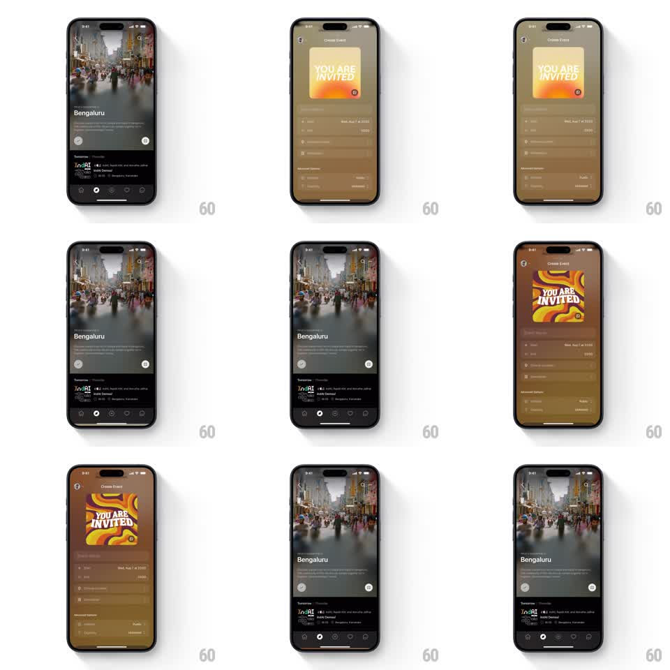

Media
Frame-by-frame

Rebuild this interaction 1:1: Luma's event theme randomizer - tapping the dice icon on the Create Event artwork card swaps the card art and re-tints the entire screen background to the new theme's palette.

Rebuild this interaction 1:1: Luma's event theme randomizer - tapping the dice icon on the Create Event artwork card swaps the card art and re-tints the entire screen background to the new theme's palette.
## Integration
Integration: stack-agnostic spec - springs given as stiffness/damping, timed motions as duration + curve; map every value to your framework and animation library of choice.
## Scene
The dark "Create Event" form: an artwork card at top ("YOU ARE INVITED" poster) with a small dice/random button on its corner, form fields below. Tapping the dice cycles the card through generated themes (sunset gradient, purple-orange swirl...) while the whole screen's background and field chrome wash to a matching tone.
## Motion spec
Pattern: dice-tap theme swap with full-screen color wash.
- Tap the dice: the dice icon spins (rotate 360deg, 300ms, ease-out) with a quick scale bounce (0.85 to 1, spring ~400/24).
- The card artwork crossfades to the next theme (250ms) with a slight vertical drift (8px) - the new art slides in as the old slides out.
- Simultaneously the screen background and surfaces crossfade to a color sampled from the new artwork (350ms, ease-in-out), so the card and chrome always feel cut from the same cloth.
- Text and field values stay fixed - only color and artwork change.
- Repeated taps chain smoothly; each tap re-triggers the spin and wash without waiting for the previous to finish.
## Calibration
- The background tint is a muted derivative of the artwork's dominant hue - never full saturation, or the form becomes unreadable.
- The card keeps its corner radius and shadow through the swap; only the artwork layer transitions.
## Reduced motion
Artwork and background crossfade instantly; no dice spin.
## Don't miss
- The dice button lives on the card's corner, half-overlapping the artwork - it is part of the card, not the form.
- The wash covers background, fields, and header together; partial retinting looks broken.